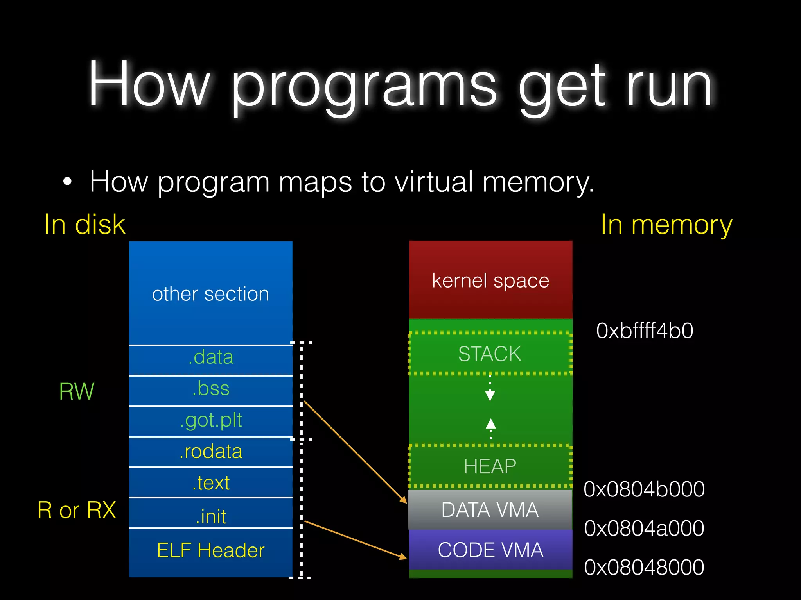

https://www.youtube.com/watch?v=Ss2e6JauS0Y
https://www.slideshare.net/AngelBoy1/execution-50215114 (recommended)
keyword: dynamic linker, rellocation, PIC, GOT, PLT
https://www.geeksforgeeks.org/memory-layout-of-c-program/
keyword: section, segment, variable, allocation.
CS61C:https://drive.google.com/file/d/1Gg1pKejSDy_dUPWdwQ1zuquI0RW8UKUu/view?pli=1


https://bottomupcs.com/ch09s03.html
https://github.com/jserv/min-dl
https://hackmd.io/@RinHizakura/S1tNA0RZv
keyword: virtual memory, shared library
ELF Document:
https://www.cs.cmu.edu/afs/cs/academic/class/15213-f00/docs/elf.pdf
ELF explained:
https://www.youtube.com/watch?v=nC1U1LJQL8o
Linker & Loader:
https://www.cs.cornell.edu/courses/cs3410/2013sp/lecture/15-linkers2-w.pdf
https://stackoverflow.com/questions/63745016/why-use-lazy-binding-for-position-independent-code-function-calls
https://rafaelchen.wordpress.com/2017/09/25/pwn%e7%9a%84%e4%bf%ae%e7%85%89%e4%b9%8b%e8%b7%af-lazy-binding/#more-1244
https://docs.oracle.com/cd/E26505_01/html/E26506/glmqp.html
https://bottomupcs.com/ch09s02.html#dynamic_linker_s2
In an executable file, the code and data segment is given a specified base address in virtual memory. The executable code is not shared, and each executable gets its own fresh address space. This means that the compiler knows exactly where the data section will be, and can reference it directly.
Consequently all libraries must be produced with code that can execute no matter where it is put into memory, known as position independent code (or PIC for short). Note that the data section is still a fixed offset from the code section; but to actually find the address of data the offset needs to be added to the load address.
https://bottomupcs.com/ch09s03.html
0000000000001050 <_start>:
1050: f3 0f 1e fa endbr64
1054: 31 ed xor %ebp,%ebp
1056: 49 89 d1 mov %rdx,%r9
1059: 5e pop %rsi
105a: 48 89 e2 mov %rsp,%rdx
105d: 48 83 e4 f0 and $0xfffffffffffffff0,%rsp
1061: 50 push %rax
1062: 54 push %rsp
1063: 45 31 c0 xor %r8d,%r8d
1066: 31 c9 xor %ecx,%ecx
1068: 48 8d 3d d1 00 00 00 lea 0xd1(%rip),%rdi # 1140 <main>
106f: ff 15 63 2f 00 00 call *0x2f63(%rip) # 3fd8 <__libc_start_main@GLIBC_2.34>
1075: f4 hlt
1076: 66 2e 0f 1f 84 00 00 cs nopw 0x0(%rax,%rax,1)
107d: 00 00 00
https://hammertux.github.io/libc-start
https://bottomupcs.com/ch08s08.html#startup
Signature of __libc_start_main.
int __libc_start_main(int (*main)(int, char *[], char *[]), int argc, char *argv[], void (*init)(void), void (*fini)(void), void (*rtld_fini)(void), void *stack_end) {
// Perform initialization tasks here
// ...
// Call the main function
int result = main(argc, argv, environ);
// Perform cleanup tasks here
// ...
return result;
}
keyword: __libc_start_main, .init, .fini, __do_global_ctors_aux
https://stackoverflow.com/questions/1061818/stack-allocation-padding-and-alignment
keyword: cache block size, data structure alignment, performance.
In C, __attribute__ is a keyword-like syntax extension that allows you to provide additional information or directives to the compiler about various attributes of a function, variable, or type.
void __attribute__((constructor)) program_init(void) {
printf("init\n");
}
void __attribute__((destructor)) program_fini(void) {
printf("fini\n");
}
int main(void)
{
return 0;
}
$ gcc -Wall -o test test.c
$ ./test
init
fini